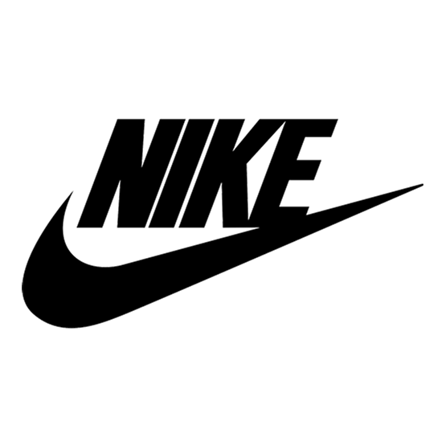

Sobre nosotros

1¿Que es nike?
Inc. Es una empresa multinacional estadounidense dedicada al diseño, desarrollo, fabricación y comercialización de equipamiento deportivo: balones, calzado, ropa, equipo, accesorios y otros artículos deportivos.
2¿Cuando se creo Nike?
Fue en 1968 cuando Phil Knight fundó la marca Nike, cuyo nombre se basaba en la diosa griega de la victoria «Niké». Hasta la fecha Nike se ha dedicado a la fabricación de productos deportivos y de uso diario como, zapatillas, playeras, gorras y suéteres.